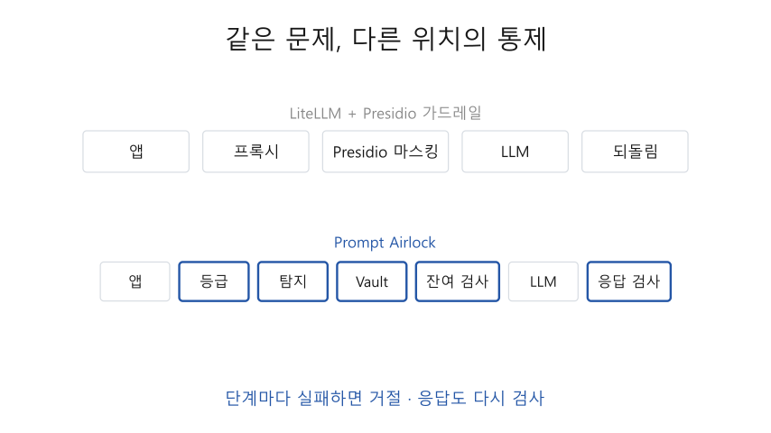
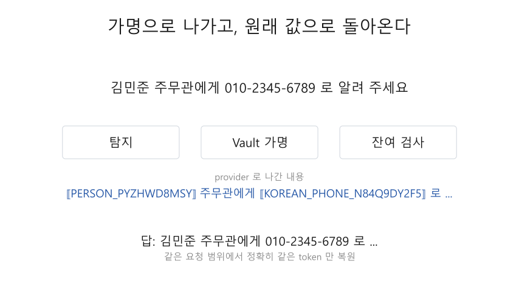
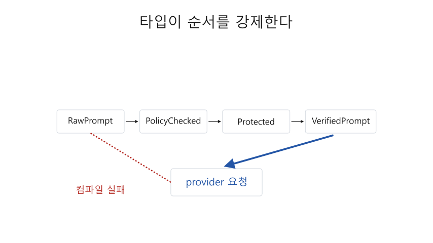

Prompt Airlock 중간 발표
- 공공기관 직원이 외부 LLM(인터넷으로 쓰는 대화형 언어모델 서비스)을 쓸 때, 질문 속 개인정보가 밖으로 나가지 않게 막는 프로그램
- 10월 결과: 질문 입력부터 답 받기까지 실제로 동작하는 첫 버전(MVP), 감사 기록과 운영 기능
발표 순서: 문제 → 용어 → 기존 도구 → 차이 → 처리 순서 → 시연 → 검증 결과 → 다음 계획
문제: 질문에 개인정보가 섞여 있음
"한빛시청 김민준 주무관에게 010-2345-6789 로 회의 일정을 알려 주는 안내문을 써 줘"
- 이 질문을 외부 LLM 에 그대로 보내면 이름·소속·전화번호가 외부 회사 서버에 저장될 수 있음
- 그렇다고 개인정보를 지우면 "누구에게, 어디로 연락하라는지" 알 수 없어 쓸모 있는 답을 받기 어려움
- 공공기관 보안 지침도 외부 LLM 에 보내는 입력과 받은 답에서 민감정보를 찾아 막도록 요구함
근거: 국가정보원 외부 언어모델 활용 보안 가이드라인(2023), 국가망 보안체계(N2SF)
해결 방향: 가명으로 바꿔 보내고, 답에서 되돌리기
- 보내기 전: 개인정보 자리를 임의 문자열(가명 token)로 바꿈
김민준 → ⟦PERSON_PYZHWD8MSY⟧, 010-2345-6789 → ⟦KOREAN_PHONE_N84Q9DY2F5⟧ - 외부 LLM 회사(provider)는 가명이 든 질문만 받고, 답에도 같은 가명을 넣어 돌려줌
- 답을 받으면 가명을 원래 값으로 되돌려 직원에게 전달
게이트웨이: 직원 앱과 provider 사이에서 모든 요청을 대신 전달·검사하는 서버 · Vault: 가명과 원래 값의 짝을 보관하는 별도 프로그램
기존 도구: LiteLLM 과 Presidio
- LiteLLM: 여러 provider 를 같은 형식으로 쓰게 해 주는 공개 중간 전달 서버. 보내기 전·받은 뒤에 검사 프로그램(가드레일)을 끼울 수 있음
- Presidio(Microsoft): 개인정보 "찾기(Analyzer) → 바꾸기(Anonymizer)" 도구. LiteLLM 에 검사 프로그램으로 붙여 씀
- LiteLLM 연동의 기본 언어는 영어 → 주민등록번호 같은 한국 형식은 직접 추가해야 함
이 프로젝트도 "찾기 → 바꾸기" 구조를 따름 · 출처: LiteLLM 공식 문서 PII Masking (Presidio), microsoft/presidio
LiteLLM + Presidio 와의 차이
| 항목 | LiteLLM + Presidio | Prompt Airlock |
|---|---|---|
| 한국 개인정보 형식 | 사용자가 직접 추가 | 국내 형식표와 한국어 NER 를 처음부터 포함 |
| 가명 짝 보관 | 프록시 프로그램 안 | 별도 Vault 프로그램(요청이 끝나면 삭제) |
| 검사 도구 고장 시 | 공식 문서에 명시 없음 | 요청을 거절(fail closed) |
| 받은 답 처리 | 자리표시자를 되돌림 | 답을 다시 검사한 뒤 되돌림 |
| 기밀 등급(C·S) 문서 | 구분 없음 | 외부 전송 자체를 막음 |

처리 순서(8단계)
1~5단계를 모두 통과한 질문만 provider 로 전송.
어느 단계든 실패하면 그 자리에서 거절.
입구
- 암호화 연결(TLS)과 등록된 앱인지 확인
- 문서 등급 확인: C·S 면 거절
개인정보
보호
- 개인정보 찾기(규칙 + 한국어 NER)
- Vault 에서 가명 받아 바꾸기
- 바꾼 질문에 원문이 남았는지 한 번 더 찾기
외부 LLM
및 응답
- provider 로 전송
- 받은 답 검사(위험한 내용·링크)
- 같은 요청의 가명만 원래 값으로 되돌림
가명이 오가는 과정
- 밖으로 나가는 질문에는 가명만 들어감
- 답이 오면 이번 요청에서 만든 가명만 원래 값으로 되돌림
- 한 글자라도 바뀐 가명은 비슷해 보여도 되돌리지 않음 → 다른 사람의 값이 잘못 들어가는 사고 방지
- 답의 링크 주소 안에 가명이 있으면 답 전체를 거절 → 링크를 누르는 순간 원래 값이 외부 사이트로 전달되는 것을 막음

검사를 건너뛸 수 없게, 고장 나면 보내지 않게
- 질문은 4단계 타입(원본 → 등급 확인 → 가명 처리 → 최종 검사 통과)으로만 바뀜
- provider 요청은 마지막 타입으로만 만들 수 있음 → 검사를 건너뛴 코드는 컴파일되지 않음
- NER·Vault 가 멈추거나 원문이 남으면 거절(fail closed), provider 호출 0

시연: 실제로 실행해 보낸 질문 6개
- S 등급 문서 → 403(거절), 밖으로 나간 것 없음
- 주민등록번호·카드번호 → 400(거절), 어떤 종류였는지만 알려 줌
- 이름·전화·이메일 → 가명으로 나가고, 받은 답에서 원래 값으로 복원
- LLM 이 가명을 링크 주소에 넣음 → 답 전체 거절
- base64(문자를 다른 글자로 바꿔 숨기는 방식)로 감춘 주민등록번호 → 풀어서 찾아 거절
- LLM 이 가명 한 글자를 바꿈 → 되돌리지 않고 거절
게이트웨이(127.0.0.1:18443)와 시험용 provider(19443)를 실제로 실행해 기록한 결과. 왼쪽: 보낸 질문과 받은 결과, 오른쪽: provider 가 실제로 받은 내용
검증 결과
325개자동 시험 모두 통과. 무작위 입력을 수백만 번 넣는 시험(fuzz)도 통과
98.7%시험 문장 300개 속 사람 이름 중 찾아낸 비율
0건시연 6개에서 원래 값이 밖으로 나간 횟수
21.6 ms짧은 질문 하나를 처리하는 시간(100번 중 95번은 이 안). LLM 답 시간(수 초)에 비해 작음
5.8 ms4 KiB(약 1,300자) 질문, NER 없이 처리 시간. 목표 20 ms 이하
오류 08개 요청을 동시에 계속 보낼 때, 초당 약 115개 처리
출처: github.com/robinhood0107/PromptAirlock 이슈 #108(이름 찾기), #110(더 큰 모델 비교), #119(속도)
정리와 다음 계획
- 구현 완료: 입력부터 응답까지 동작하는 게이트웨이, 감사 기록(1년 이상 보관, 변조 확인), 운영 기능
- 한계: 이름 600개 중 13개(2.2%) 못 찾음 → 기관·거래처 이름을 보호어 목록으로 보완
- 다음: 요청마다 처리 시간 제한, 실제 provider 연결, 사용성 평가